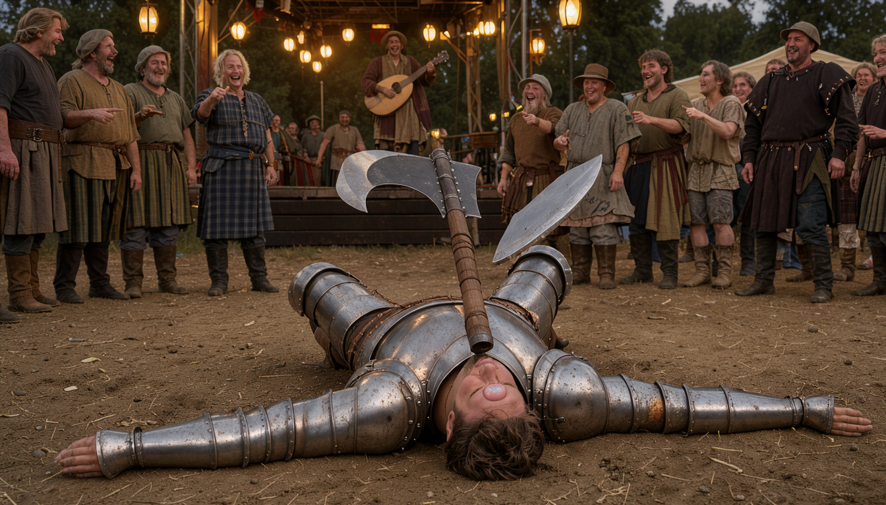
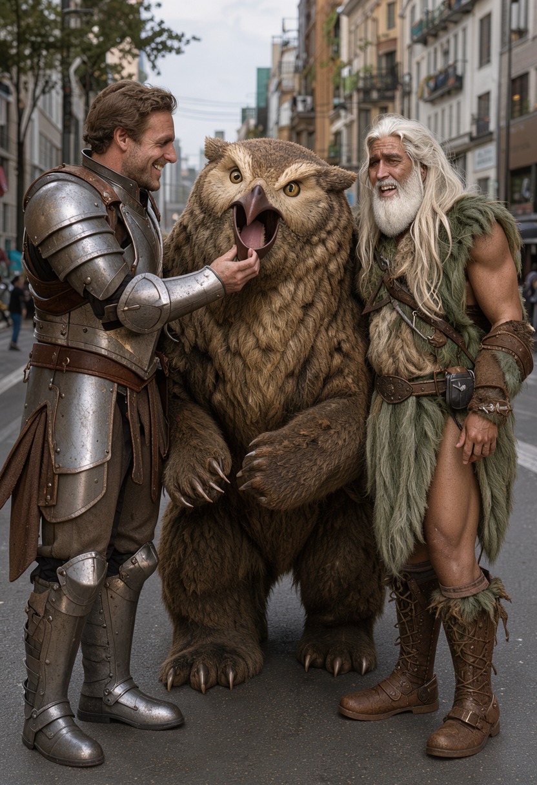
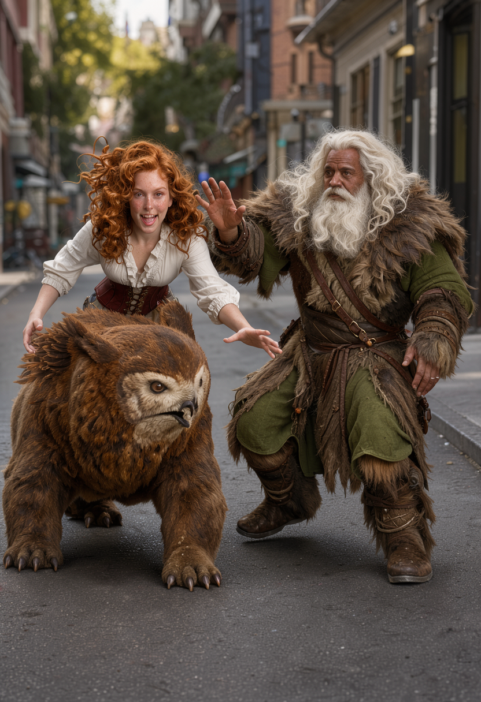
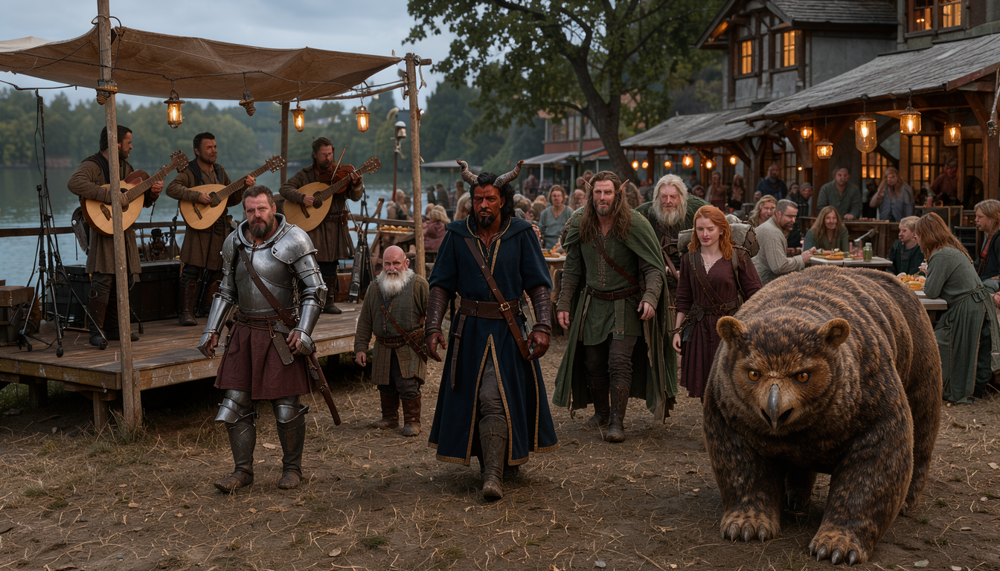
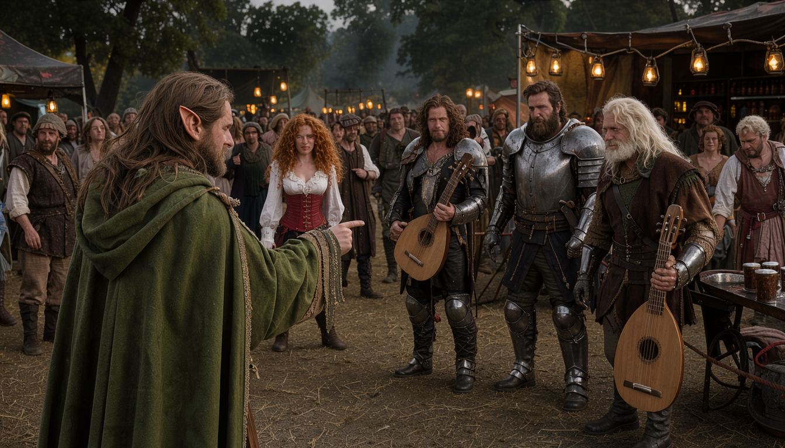
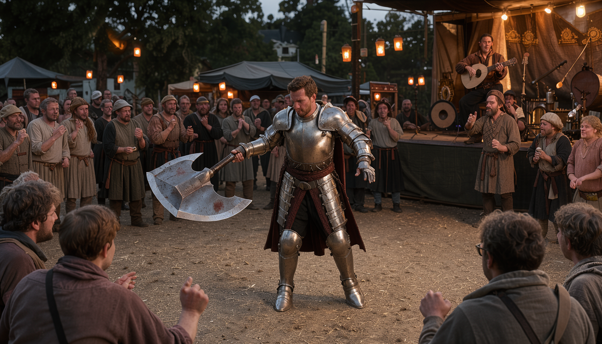
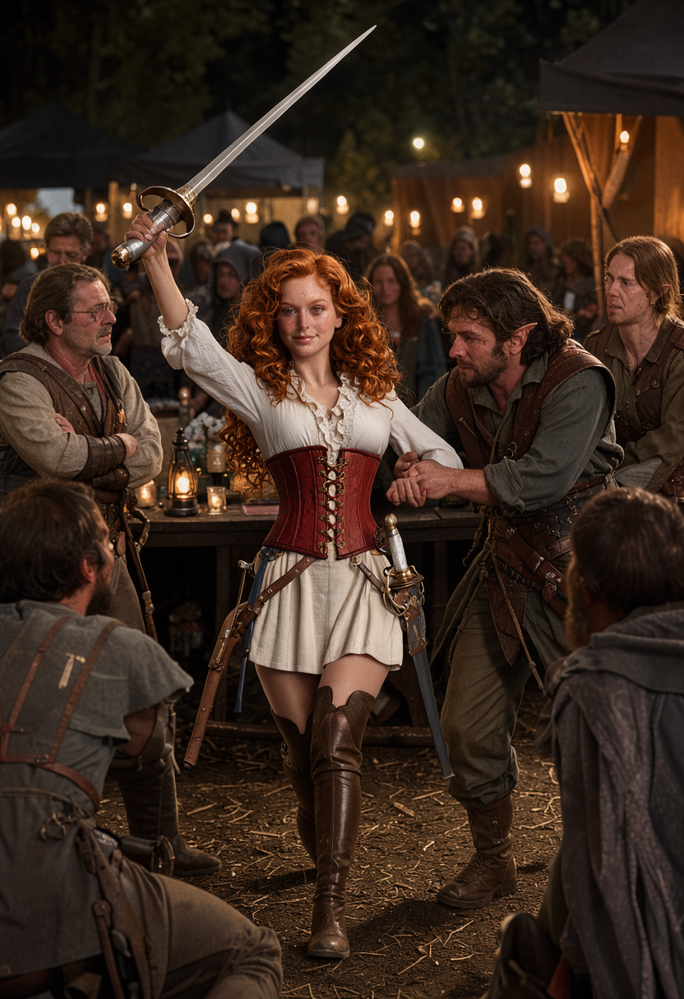
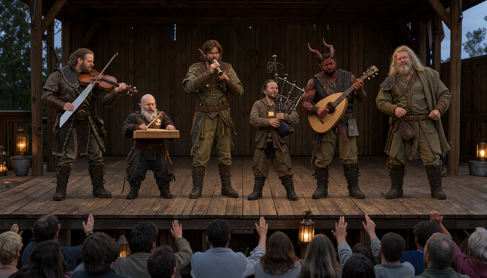
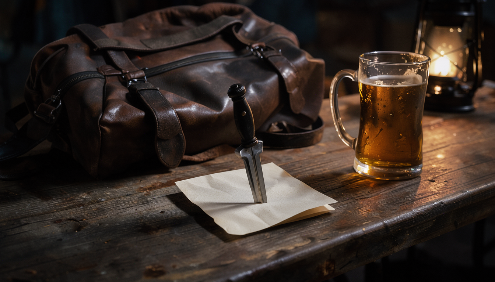

THE CHAOS BRIGADE · JOURNAL 03 · DOODLY DOODLY DOO AND FROZEN LILY
Rocketcandy hit himself in the head with his own axe, in full plate, in front
of a crowd, on purpose — well, not on purpose the second time.
The first time was art. Spinning axe, catch, jump-rope, behind the back, limbo
under the handle while a professional bard scatted along. Dirty twenty. The
crowd came to us. The moody band noticed. Everything I asked for and nothing I
expected, which is my whole job in one sentence.
Then he tried a back-handspring.
Acrobatics two. Face-first into the flagstones, helmet somewhere behind him. Dexterity save seven, which in
this game means you fail at falling, and the axe came down butt-first on his
own forehead for four bludgeoning damage, to laughter. He bought the band three
drinks with one hand and held the other hand to his head for the rest of the
evening, rolling perception at disadvantage — twice, take the worse — and
wandering back to the group having noticed nothing, which was accurate, because
there was nothing to notice except him.
My name is Ben. I run the game. Last session my players weaponized a frying
pan and negotiated with a butler. This session they formed a band. Pour
something. We begin with eight total, bear included, and a missing girl by the end.

Chapter 1 — An Axe, a Forehead, Four Damage
We open split and close together, which for this party counts as character growth. When we left them: five adventurers marching to the Horned Rabbit with a noblewoman's rucksack towering over all of them, and a druid across town closing a deal for forgetfulness with three salt shakers and a map that rewrote itself. Tonight those two groups become eight — count them: six players, one tag-along, one owlbear — and by the end of the night they will be seven again, minus one girl and plus one ransom note, and none of it will be anyone's fault, which is the most suspicious part.
Lilly, first. She is tagging along now, officially, with the best gear money can afford and a rucksack twice her size and a tearful butler's blessing still drying on the doorstep. Pact terms restated at the top of the evening, because Biggins insists and because he is right: keep her alive, or die trying. No enforcement mechanism has shown up yet. The magic is patient. So am I. So, unfortunately for everyone, is the night.
Chapter 2 — Doodly Doodly Doo
The party walks, and Lilly twirls. First time out of her neighborhood in longer than she can remember — first time out anywhere, functionally — and Neverwinter hits her like weather: dragonborn, elves, orcs, crowds, and a girl spinning in the street with a pack taller than she is, delighted by all of it. "Doodly doodly doo," more or less, is the transcript's best rendering of the sound of a sheltered twenty-two-year-old discovering the world, and I am keeping it as the chapter title because it is also the sound this whole session makes.
Rocketcandy, walking beside all that joy, asks whether she can carry his axe. Reader, she has eight hit points. Eight — hit points being how much hurt you can take before you stop. The paladin is asking a woman with eight hit points to carry his axe, and Chip — who is not present, who is across town, who can nevertheless hear axe-related danger the way other druids hear weather — interjects to object. Then someone does the armor math, and the table goes quiet in the particular way tables go quiet when the numbers stop making sense: AC twenty-three — armor class, how hard you are to hit, higher is better. Twenty-three. Higher than the paladins. The girl with eight hit points is harder to hit than the tank, because her clothes cost more than his training. She is, as I tell them, a normal human being wearing really great stuff — take the gear off and she is just another regular human, because not everyone is a crazy overpowered sorcerer-paladin-warlock tank. The table absorbs this the way tables absorb all economics: by moving on immediately. But I need you to remember it, because the whole journal is downstream of one fact: the most valuable thing in the party is also the most breakable.
Vadania, meanwhile, is doing background checks. How did you meet the butler, when did your father leave, who raised you — the ranger interrogates the girl's childhood like it owes him money. Lilly: father gone for years, came back withdrawn, and Biggins — with the family since before she can remember — brought him out of it. Barely remembers a time without him. And the stories! Biggins balances on the backs of chairs to dust. Catches falling things before they fall. Ruffians flee from him, which Lilly has always assumed is shyness. Vadania asks whether any of this reads as assassin training, and rolls a ten, and concludes — on a ten — that she sees it all as perfectly normal Biggins behavior. The thread stalls there, in the street, because a ten is where threads go to wait. But I need you to remember that too. Chair backs. Falling objects. Fleeing ruffians. Normal Biggins behavior.
Filed. Moving on.

S0 · The party — Eight total, bear included.

Chapter 3 — Mr. Water Bear Owl
Round the last corner and there they are: a block or two ahead, going the same direction, unmistakable at any distance. Water Bear first — you always see the bear first, it is most of the view — and behind him, Chip, exactly where a druid should be, which is wherever the bear isn't looking. Rocketcandy does not wait for consensus. He runs up the street and scratches the owlbear under the beak, and the party falls in lockstep around the two of them like this was the plan all along, and the plan, for once, is exactly this. Stories get swapped at walking pace: job board, six hundred gold, a girl with a rucksack and a dream. Eight heads now. Count them. Six, one, and one bear.
Chip clocks it first — perception thirteen, last-second save. Lilly, captivated, is reaching out to pet the Water Bear. So Chip does what druids do: speaks a word in Druidic, and the bear steps back, feathers raised, overwhelmed by the city and the new smells and the small human coming at him like weather. Lilly, undeterred, attempts Animal Handling and rolls a six. A six, reader, is how you fail at petting. She rushes him like it's chase-play. Chip calmly puts himself between them — barricade of one druid — and delivers the ruling that will govern this relationship going forward: "You have to ask the bear." So she does. Hands together, formal as court: "Mr. Water Bear Owl, can I pet you?" Then, for good measure, she mimics the Druidic back at him, syllables and all, and touches — one touch, tolerated, not enjoyed — and Chip calls it. Enough. Fish later, he promises the bear, out loud, in front of everyone, and the bear accepts the terms, and Lilly learns her first lesson in adventuring: the wild has office hours, and they are Chip's.
Chapter 4 — Battle of the Bards
The crowds thicken as evening comes on, and then the street opens up and there it is: lanterns, tables, barmaids with trays held high, a band on a stage, and over all of it a giant sign reading BATTLE OF THE BARDS. A festival that happens to have a quest in it, or a quest that happens to have a festival in it — either way the party walks in with eight heads total, beak included, and starts casing the joint like it owes them money. Chip and Rocketcandy clock it first, together, the two highest perceptions at the table arriving at the same conclusion from opposite directions: people carrying instruments. People strumming. Somewhere in this crowd is a moody band, and Chip has a stone that needs gloom.
Logistics first, because Gulgrim insists and because Gulgrim is right: count the party (eight, bear included), find the innkeeper, demand three rooms. The Horned Rabbit's bartender looks up — "what'll it be, short stuff?" — and quotes the night: one room left, sleeps four in two beds, a hundred gold plus drinks. Gulgrim does the math the way other men draw swords. "Never mind," he says, and walks away, and reports to the party that they will not be sleeping here. A hundred gold. For four beds. The man who paid double for lunch on principle would not pay quadruple for a mattress, and honestly? Correct call. The night is young, the festival is free, and beds are for parties without a broadcast stone and a ransom note in their future. (He doesn't know about the note yet. Nobody knows about the note yet. The note is the last page of this journal and I am enjoying every step toward it.)
Vadania finds the mark the way Vadania finds everything: by staring until the world cooperates. Twenty-three on perception, and there they are, second or third in line: dark leathers, browns, blacks, low jubilant energy in a field of celebration — the moodiest band at the festival, gloomy on purpose, perfect. Rocketcandy spots the apparatus around them (ten on perception, enough): a clipboard, a rope, a bouncer logging instrument groups into the band area. Gated community. Time to knock.


S1 · The festival — Gloom, spotted.

Chapter 5 — The Axe Trick
What Rocketcandy does next deserves precision, because my players will tell this story wrong for years. He does not ask permission. He does not check the lineup. He walks up to the roped-off band area with an axe and a grin and performs: spin, catch, jump-rope with the axe, behind the back, limbo under the spinning handle while the stage bard — a professional, mid-set, derailed in real time — starts vamping along behind him, scatting nonsense to keep up. Dirty twenty on performance — a natural twenty with bonuses stacked on top, the best roll the game allows. The crowd comes to us. The moody band notices. Auggie from the bar notices. The whole festival tilts ten degrees toward the paladin, and for one shining minute the plan is working exactly as no one planned it.
Then — because this table cannot leave perfection alone — he tries a back-handspring. In full plate. Acrobatics two. He goes over like a felled keep, face-first into the flagstones, helmet somewhere behind him, and the dexterity save comes up seven, which means he fails at falling, and the axe comes down butt-first onto his own forehead for four bludgeoning damage, to enormous laughter. Byodan's assessment from the sidelines: "impressive part is he had the room to do this." Aaron, helpfully: "Dead bodies and blood everywhere." Derek, holding the only sane position left: looks at Rocky and asks what any of it was for. Answer: the band. It worked. The band noticed, the crowd laughed with the plan rather than at it, and Rocketcandy buys the-dark-and-mysterious three drinks with one hand while holding the other hand to his head for the rest of the evening — rolling perception at disadvantage from then on (roll twice, take the worse), wandering back to the group having noticed nothing, which was accurate, because there was nothing to notice except him.
The band, introduced at last: Lom, no instrument, singer, frontman of the dark and mysterious, playing their eighth Battle of the Bards "this cycle of soul." They will talk custom songs after the set, over drinks, stage-side after the applause. Terms to follow. Pride currently intact. Foreheads, various.

S2 · The trick — Twenty, then two.
Chapter 6 — Lilly, Lost and Found
Keechwah has one job: watch the girl. He claims the Lilly-watch like a man accepting a sacred trust, and then — his words, on the record — he looks away for one second to follow a barmaid's tray across the room, rolls a seven, and loses her completely. One second. Seven. Gone. The babysitter has been babysat by the room, and the room is very good at it. The table erupts the way tables erupt when the careful one fails carefully, and the search begins.
Shade finds her. Of course Shade finds her. Fifteen on perception, slipped through the crowd like it was weather, and there she is across the way at a table with a great view of the stage: pack down, drink in hand, alone, delighted. Age check first — Chip does the math out loud, Wisdom twenty-one: early twenties, twenty-two, twenty-three, old enough to drink, crisis of propriety averted — and then the confrontation. The drink came from a "pretty lady" barmaid with ten drinks on a tray and a large coin purse. The table, the barmaid says, "just opened." Lilly gulps the frothy ale, spills it down her corset, and then — in the move that stops three conversations at once — slaps her satchel onto the table, and it spills hundreds of gold. "Gave her one of these," somebody says, meaning the purse, meaning someone handed this girl hundreds of gold and no instructions. Heads whip around the room. Shade's whole Thieves-Guild sense goes off like a bell. Vadania's verdict is instant: pocket it. She cinches it shut. Vadania rolls fifteen for watchers: no overt move — the group looks too hardened to rob, tonight, in this light. Tonight. In this light. Qualifiers doing heavy lifting.
Then the lecture, and it is a good one, and it does not work. Stay with someone. Hold the table. Don't wander. Lilly hears the concern, appreciates the concern, and responds by wanting new friends and meeting people, and flashes the Gulgrim dagger and the mother-of-pearl rapier for emphasis. Vadania grabs for the rapier's elbow — athletics four against five, the die's little joke — and the blade comes all the way out, fully drawn, over ale, in a crowd, held by a girl who has owned it for hours. Only the ring of party bodies around her keeps it from becoming an incident. The plan, revised under pressure: leave her at the table — "our table" now, claimed by presence — signal Keechwah to sit on her, and the rest go back to Chip and the bear and wait out the band's set. The babysitter, chastened, sits. The table holds. The set plays on.


S3 · The spiral — Shine, then brandish.
Chapter 7 — The Chaos Brigade (Band Edition)
The dark and mysterious take the stage, and I want the record to show what that means: songs about darkness and undead and graveyards and dead puppies, a showpiece ballad about salt versus sugar that took, by their own account, three weeks to write. The crowd receives it the way crowds receive homework. Scattered cheers. Cold tables. Our party applauds strategically — loudly, visibly, from exactly the right seats — because Chip needs these men agreeable and agreeable is a currency you mint yourself.
Meanwhile Chip has solved the bear problem the unglamorous way: the valet flips the book — "what do we charge for an owlbear?" — and lands on one gold a night, horses and donkeys giving the paddock a wide berth on arrival. Chip pays. Gets the ticket. Heads back to the table, where the evening has settled into its rhythm: Rocketcandy with two tankards at one gold each (one for drinking, one pressed to the forehead), Shade scanning the room in active hope of not seeing the bard he drunkenly told their whole story to last time, Vadania watching everything the way Vadania watches everything now, which is constantly and without blinking.
Post-set, glasses up, Chip buys the band three drinks and pitches it: a hooded figure, walking at night, needs an ominous aura in song form — custom work, magic involved, favor owed to a friend. The band confers. Three weeks for salt and sugar, remember. Chip watches their faces the way Chip watches everything, which is better than anyone credits, and catches it: the face-scratch. Dirty twenty on perception. The tell lands, the demand follows: four thousand gold, discounted to thirty-eight hundred, for one custom song. Chip looks at them the way druids look at clear-cuts. "Unreasonable," he says. "When's the last time you were paid that much for a song?" The table holds its breath. The band holds its price. And then, from the next table over, a bearded minstrel with a loot starts laughing — gutturally, helplessly, the laugh of a man watching amateurs get skinned — and stands up and runs them off his stage: first Battle of the Bards, not eighth, not second, quit trying to swindle, beat it. Lom's crew scatters. And the bearded man turns to our table, loot in hand, and introduces himself as Bearnuts.
Yes. Bearnuts. That is his name. That is also James's name — Bearnuts [James], dwarf cleric, metronome, poop-in-a-hole.jpeg. No, the table never resolves it. Yes, I have chosen to love it rather than solve it, the same way I loved Albert. Moving on.
Bearnuts — the minstrel, the new one, the one with the loot and the beard and the fine clothes — heard the whole pitch and makes a counter-offer with no gold in it at all. He is ex-Wandering Minstrels. He needs a backup band for a slam-bang set. We back him, he writes the song by morning. Trade, not transaction. And just like that the evening inverts: auditions over, band formed. Keechwah on lute (he has one, random Compass Rose pickup, cannot play it, bulk complaints noted and overruled). Gulgrim on block-and-stick, keeping time like a metronome with a grudge. Shade on bagpipes — volunteered sight unseen, which tells you everything about David's confidence and nothing about his musicality. Rocketcandy on fiddle. Vadania on fife. Chip on backup and vibes, with one firm condition: no animal act. Lilly is designated crowd groupie and woo-girl, a title she accepts like a knighthood. Bardic Inspiration d6s all around — borrowed luck, a six-sided bonus for everyone — Guidance d4 on top — a little druid encouragement — and the band takes its name the only way it could: the Chaos Brigade. Huddle speech — music from the heart — hands in. Even the bear would have joined if the bear had hands, which, no animal act, fine.
The set, because you are wondering and because the transcript kept receipts: Chip's Druidcraft — a free baby spell, this one for weather and candlelight — snuffs every third candle and puts a breeze in everyone's hair. The minstrel announces the Chaos Brigade. They play. Keechwah adds Thaumaturgy — same weight class, this one for tremors — under the bass so the ground itself keeps time. tremors under the bass so the ground itself keeps time. Scores come in scattered — thirteen here, sixteen there, a twenty from Keechwah (twelve plus four plus four, rerolled fourteen with advantage and kept honest), an eleven from Shade, a six from Vadania (three plus one plus two, and no, I don't know what the two was either), a seventeen from Rocketcandy — and it averages to fourteen. DC was twelve — Difficulty Class, the number to beat. Fifteen would have been frenzy, twenty would have been Beatles. Fourteen is: competent, joyful, standing ovation, ushered off before anyone asks for an encore. Good. Not Beatles. The distinction matters to history.

S4 · The set — Good, not Beatles.


Chapter 8 — Meet Me South of Town
After the ovation, business: Chip repeats the pitch, hands over Thumba's stone, and the minstrel promises a mystery banger by morning — meet in front of the Horned Rabbit, handshake, he disappears inside with our apothecary's favor in his pocket and the whole table watching him go. Then table talk, banter, the room settling — and Gulgrim stands to reclaim their table, walks over, and stops.
Lilly is gone. Pack gone. Table empty but for one thing: his own gifted dagger, driven point-first through a folded note. Ben reads it aloud, and the room — the real room, my players, out of character for the first time all night — goes completely silent: "meet me on the road south of town if you want your little adventurer back."
Lowercase. No signature. Pinned with his knife. Whoever took her was close enough to touch her table, quiet enough that a festival never noticed, and polite enough to use Gulgrim's own steel as the envelope. The pact says keep her alive or die trying. The pact does not say anything about ransom notes, because when Gulgrim shook Biggins' forearm, nobody at the table — nobody, myself included — had priced this outcome. That is the session. That is the book. Seven heads. Count them. Seven.
## ART LOCK (appendix): reuse audit first, then generate
Plates (§7 of proposal) map to existing art — generate ONLY what the audit cannot cover:

S5 · Gone — Seven.